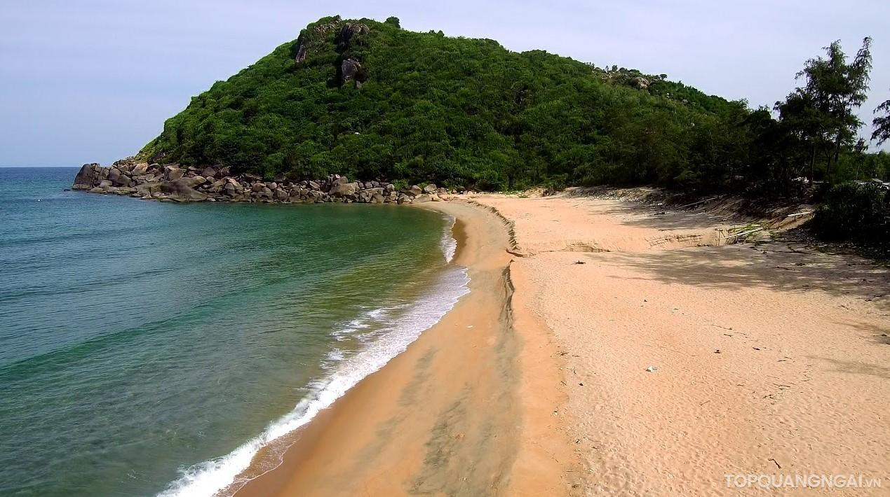

Bãi tắm Sa Huỳnh
Sa Huỳnh là một địa danh thuộc địa phận phường Phổ Thạnh của thị xã Đức Phổ, cực nam tỉnh Quảng Ngãi và cũng là tên một địa điểm khảo cổ học, nơi người ta đã tìm thấy các dấu vết của văn hóa Sa Huỳnh lần đầu được tìm thấy vào năm 1909 bởi nhà khảo cổ học người Pháp Vinet. Trước đây, địa danh này có tên là Sa Hoàng (bãi cát vàng), song vì chữ hoàng trùng tên với chúa Nguyễn Hoàng nên đọc lái lại thành Sa Huỳnh.
Bờ biển Sa Huỳnh đã được Xuân Diệu nhận xét:
"Hỏi mình biển đẹp vô ngần, Sóng xanh như đến dừng chân Sa Huỳnh".
Đặng Thùy Trâm trong nhật ký của mình có viết:
...Khi nhìn về dãy núi phương Nam. Sóng biển Sa Huỳnh vẫn mặn nhớ thương. Vẫn dạt dào đêm ngày vẫy gọi. Vẫn chờ anh với chiến công chói lọi. Và hẹn ngày đất nước yên vui...
Tìm hiểu thêm trên Wikipedia
